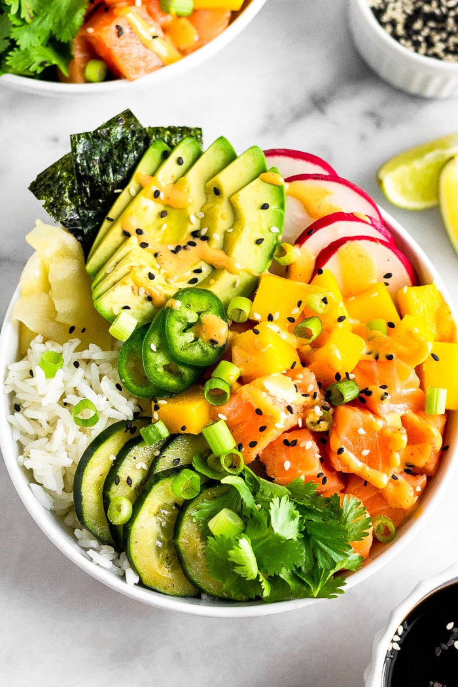

Recipe for a delious poke bowl
Hawaii region dish that is delious and healthy
Poke is a very versatile dish that can use many ingredients found in your fridge
Ingredients
- Choice of sushi graded salmon or tuna
- 1 cup of cooked sushi rice
- 1 whole advocado
- 1/4 raw red onion
- Nori seaweed
- Edamame
- Pickled ginger
- Vegetables of choice, popular options include cucumbers, carrots, radishes
- 1 table spoon of soy sauce
- 2 table spoons of mayo
- 2 table spoons of sriracha
Instructions
- Cut your fish of choice into dice size pieces
- Whisk and mix the soy sauce, mayo and sriracha until nice and creamy
- Plate rice with your cut up fish
- Add all listed toppings
- Spoon your sriracha mayo over the dish
- Enjoy
Click here to return to previous page
Click here to return to top of page